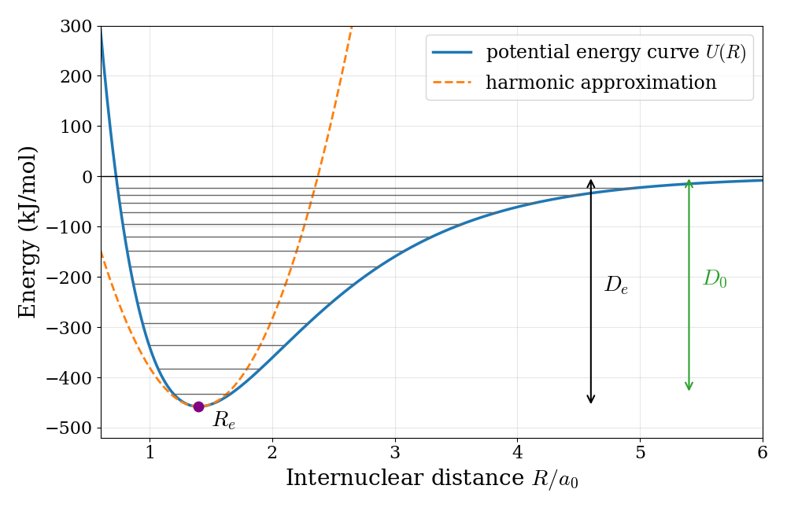
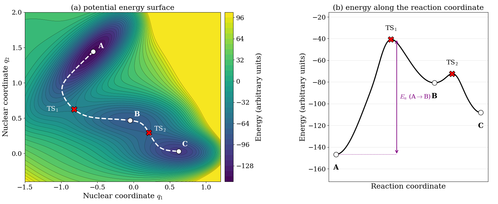
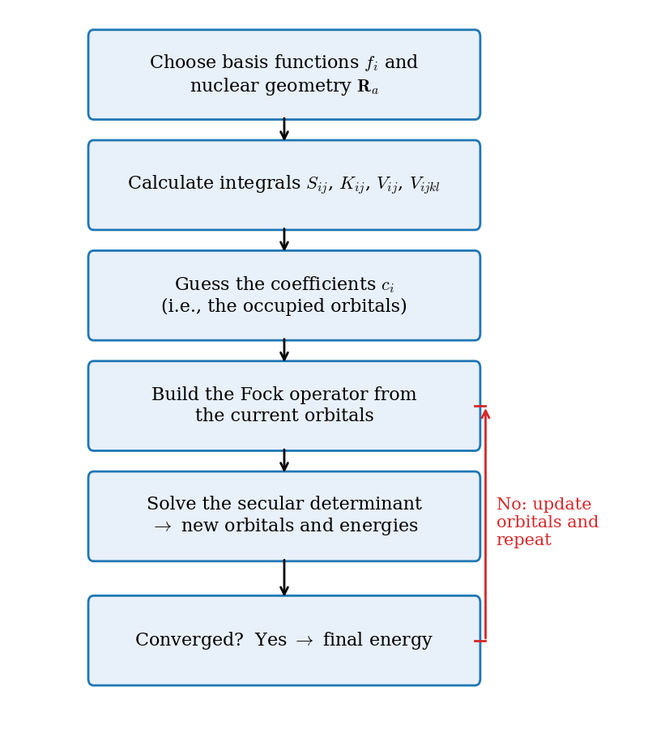

10 Introduction to Molecules
In the previous chapter we saw that a single extra electron is enough to make the TISEq impossible to solve exactly. Molecules add a further complication: they contain several nuclei, which can also move. In this chapter we will introduce the two approximations that make molecules tractable: the Born–Oppenheimer approximation, which separates the motion of the nuclei from that of the electrons, and the Hartree–Fock method, which extends the ideas that we used for the helium atom to molecular orbitals.
10.1 The Molecular Hamiltonian
For a molecule, we can decompose the Hamiltonian operator as:
\[ \hat{H} = \hat{K}_N +\hat{K}_{e} + \hat{V}_{NN} + \hat{V}_{eN} + \hat{V}_{ee} \tag{10.1}\]
where we have decomposed the kinetic energy operator into nuclear and electronic terms, \(\hat{K}_N\) and \(\hat{K}_e\), as well as the potential energy operator into terms representing the interactions between nuclei, \(\hat{V}_{NN}\), between electrons, \(\hat{V}_{ee}\), and between electrons and nuclei, \(\hat{V}_{eN}\). Each term can then be calculated using:
\[ \begin{aligned} \hat{K}_{N} &=-\sum_{i}^{\text{nuclei}}{\frac {\hbar ^{2}}{2M_{i}}}\nabla_{{{\mathbf {R}}_{i}}}^{2} \\ \hat {K}_{e} &=-\sum_{i}^{\text{electrons}}{\frac {\hbar ^{2}}{2m_{e}}}\nabla _{{{\mathbf{r}}_{i}}}^{2} \\ \hat{V}_{{NN}} &= \sum _{i}\sum _{{j>i}}{\frac {Z_{i}Z_{j}e^{2}}{4\pi \varepsilon _{0}\left|{\mathbf {R}}_{i}-{\mathbf {R}}_{j}\right|}} \\ \hat {V}_{{eN}} &=-\sum _{i}\sum _{j}{\frac {Z_{i}e^{2}}{4\pi \varepsilon_{0}\left|{\mathbf {R}}_{i}-{\mathbf {r}}_{j}\right|}} \\ \hat{V}_{{ee}} &= \sum _{i}\sum _{{j>i}}{\frac {e^{2}}{4\pi \varepsilon _{0}\left|{\mathbf {r}}_{i}-{\mathbf {r}}_{j}\right|}}, \end{aligned} \tag{10.2}\]
where \(M_i\), \(Z_i\), and \(\mathbf{R}_i\) are the mass, atomic number, and coordinates of nucleus \(i\), respectively, and all other symbols are the same as those used in eq. 9.1 for the many-electron atom Hamiltonian. Notice that the two potential energy terms between like particles (\(\hat{V}_{NN}\) and \(\hat{V}_{ee}\)) are positive (repulsive), while the term between electrons and nuclei is negative (attractive). The chemical bond is the result of a delicate balance between these three terms and the kinetic energy.
10.1.1 Small terms in the molecular Hamiltonian
Eq. 10.1 is often called the “exact” non-relativistic Hamiltonian of a molecule, but it is worth remembering what it leaves out. The first missing piece is relativity. The valence electrons of light atoms move at a small fraction of the speed of light (less than 1% for the electron in the hydrogen atom), but the inner electrons of heavy atoms are pulled so strongly by the nucleus that relativistic effects become important. The second missing piece is the coupling between the spin of each electron and its orbital motion. We can picture it by sitting on the electron: from its point of view, the charged nucleus is the one that moves around it, and this moving charge creates a magnetic field proportional to the orbital angular momentum, \(\mathbf{L}\). The electron carries its own magnetic moment, proportional to its spin, \(\mathbf{S}\), and the interaction between the two gives an energy term proportional to \(\mathbf{L} \cdot \mathbf{S}\), called spin–orbit coupling. Both effects grow quickly with the nuclear charge, so they are small for the molecules made of first- and second-row atoms that we discuss in this textbook, and we will neglect them from now on.
10.2 The Born–Oppenheimer Approximation
Before looking at molecules, let’s recall a general property that we already used for the helium atom. If a Hamiltonian can be written as the sum of two terms, each depending on a different set of coordinates, \(q_1\) and \(q_2\):
\[ \hat{H} = \hat{H}_1(q_1) + \hat{H}_2(q_2), \tag{10.3}\]
then its eigenfunctions are products of the eigenfunctions of each piece, and its eigenvalues are sums of their eigenvalues:
\[ \psi(q_1, q_2) = \psi_1(q_1) \psi_2(q_2), \qquad E = E_1 + E_2. \tag{10.4}\]
A big problem is broken into smaller ones, which is exactly what we did when we wrote the wave function of helium as a product of two hydrogen-like orbitals.
Can we use this trick to separate the electrons from the nuclei in eq. 10.1? Not exactly, because the electron–nucleus attraction, \(\hat{V}_{eN}\), depends on the coordinates of both electrons and nuclei at the same time. However, nuclei are much heavier than electrons (a proton is about \(1{,}836\) times heavier than an electron), so they move much more slowly. From the point of view of the electrons, the nuclei are almost standing still; from the point of view of the nuclei, the electrons adjust almost instantaneously to any change in their positions. This suggests that we can write the total wave function, approximately, as:
\[ \psi(\mathbf{r}, \mathbf{R}) \approx \psi_e(\mathbf{r}; \mathbf{R}) \psi_N(\mathbf{R}), \tag{10.6}\]
where \(\psi_e(\mathbf{r}; \mathbf{R})\) is the electronic wave function calculated with the nuclei held fixed at positions \(\mathbf{R}\). The semicolon indicates that \(\psi_e\) is a function of the electronic coordinates \(\mathbf{r}\) that depends only parametrically on \(\mathbf{R}\): for each arrangement of the nuclei we get a different electronic wave function, but the nuclear positions are not variables of the electronic problem. This approximation is called the Born–Oppenheimer approximation, and it is accurate for the vast majority of chemical applications.
In practice, we fix the nuclei at some configuration, \(\mathbf{R_a}\), and solve the TISEq for the electrons only, using the electronic Hamiltonian:
\[ \hat{H}_{\text{e}} = \hat{K}_e(\mathbf{r}) + \hat{V}_{eN}\left(\mathbf{r}; \mathbf{R_a} \right) + \hat{V}_{ee}(\mathbf{r}), \tag{10.7}\]
where we have dropped the nuclear kinetic energy, \(\hat{K}_N\), since the nuclei are fixed (and, in any case, \(\hat{K}_N\) is smaller than \(\hat{K}_e\) by roughly the ratio \(\frac{m_e}{M_i}\)). We have also left out \(\hat{V}_{NN}(\mathbf{R_a})\), since for fixed nuclei it is just a constant that shifts all the eigenvalues by the same amount and can be added back at the end. The electron–nucleus attraction stays in the electronic Hamiltonian, but now it depends on \(\mathbf{R_a}\) only as a parameter. The electronic Hamiltonian results in the following TISEq:
\[ \hat{H}_{e} \psi_e \left(\mathbf{r}; \mathbf{R_a} \right) = E_{e}(\mathbf{R_a}) \psi_e \left(\mathbf{r}; \mathbf{R_a} \right), \tag{10.8}\]
which is the equation that we will use to explain the chemical bond in the next chapter. Notice that eq. 10.8 is not the total TISEq of the system, since it says nothing about the motion of the nuclei. As is customary in quantum chemistry, in the remainder of this textbook we will use the term “total energy” for the “total energy at fixed geometry,” which is \(E_{e}\) of eq. 10.8 plus the constant nuclear–nuclear repulsion, \(V_{NN}(\mathbf{R_a})\) (i.e., everything except the nuclear kinetic energy).
10.2.1 Potential energy surfaces
The Born–Oppenheimer approximation has a very important consequence. If we repeat the electronic calculation for many different arrangements of the nuclei, we obtain the total energy at fixed geometry as a function of the nuclear coordinates:
\[ U(\mathbf{R}) = E_e(\mathbf{R}) + V_{NN}(\mathbf{R}). \tag{10.9}\]
This function is called the potential energy surface (PES), and it is the potential energy that the nuclei feel when they move. The motion of the nuclei (vibrations, rotations, and chemical reactions) can then be described by solving a second TISEq for the nuclei, with the PES playing the role of the potential: \(\left[\hat{K}_N + U(\mathbf{R})\right]\psi_N(\mathbf{R}) = E\,\psi_N(\mathbf{R})\).
For a diatomic molecule, the only coordinate that matters is the internuclear distance, \(R\), and the PES reduces to a curve. The potential energy curve of the hydrogen molecule is plotted in figure 10.1.

This single curve contains a lot of chemistry:
Equilibrium geometry: the minimum of the curve, at \(R_e=1.40\,a_0=0.74\,\text{Å}\), is the equilibrium bond distance of the molecule. For larger molecules, minima of the PES correspond to stable structures, and finding them is called geometry optimization.
Bond energy: the depth of the well, \(D_e=458\text{ kJ/mol}\), is the energy needed to separate the two atoms starting from the bottom of the well. The molecule, however, can never sit exactly at the bottom: even in its lowest vibrational level it has a zero-point energy, as we saw for the harmonic oscillator in chapter 4. The experimentally measurable dissociation energy, \(D_0=D_e-\text{ZPE}=432\text{ kJ/mol}\), is measured from the lowest vibrational level.
Vibrations: close to the minimum, the curve looks like a parabola, and the harmonic oscillator of chapter 4 is a good model, with force constant equal to the curvature of the PES at the minimum, \(k=\left.\frac{d^2U}{dR^2}\right|_{R_e}\). As the energy increases, the real curve becomes wider than the parabola, and it flattens out towards the dissociation limit. As a consequence, the vibrational levels get closer to each other as they approach dissociation, unlike the equally spaced levels of the harmonic oscillator. We will see how these features show up in experiments in chapter 13.
For a molecule with \(N_{\text{at}}\) atoms, the PES depends on \(3N_{\text{at}}-6\) internal coordinates (\(3N_{\text{at}}-5\) for linear molecules), and it is a surface in many dimensions. We cannot draw it, but we can get a feeling for its features using a model surface in two dimensions, such as the one in figure 10.2.

Each minimum (A, B, and C) corresponds to a stable structure of the molecule, such as a reactant, a product, or an intermediate. To go from one minimum to another, the molecule must pass over a mountain pass, called a saddle point: a point that is a maximum along the path that connects the two minima, but a minimum along every other direction. In chemistry, these saddle points are the transition states of chemical reactions, and the energy difference between a minimum and the transition state is the activation energy of the reaction.
If we want to go from one minimum to another, there are infinitely many possible paths on the surface, but the most important one is the path of lowest energy, which follows the bottom of the valleys and crosses each mountain pass exactly at the saddle point. This path is called the minimum energy path, and it is shown as a dashed line in figure 10.2a. The distance traveled along this path, measured from the starting minimum, is called the reaction coordinate. It is a single number that tells us how far the reaction has progressed, even though, in a real molecule, moving along it may require changing many bond lengths and angles at the same time. If we plot the energy along the reaction coordinate, as in figure 10.2b, the many-dimensional surface reduces to the familiar one-dimensional reaction profile of general chemistry and kinetics courses: reactants and products are minima, the transition state is the maximum between them, and the height of the barrier is the activation energy. Notice that the reaction profile hides most of the information contained in the surface: the reaction coordinate is not one of the nuclear coordinates \(q_1\) or \(q_2\), but a curved path through both of them. The PES is therefore the bridge between quantum mechanics and chemical reactivity: structures, vibrational frequencies, reaction paths, and activation energies are all properties of the PES.
10.3 Solving the Electronic Eigenvalue Problem
Once we have invoked the Born–Oppenheimer approximation, we can try to solve the electronic TISEq in eq. 10.8. For any molecule with more than one electron (i.e., all molecules except \(\mathrm{H}_2^+\) and a few exotic ions), we need to keep in mind the antisymmetry of the wave function, so we write the electronic wave function as a Slater determinant, as we did for atoms in chapter 9. Then we need to approximate the Hamiltonian, since the electron-electron repulsion term does not allow an analytic solution. Similarly to the many-electron atom case, the simplest approximation is to use the variational method and to treat the electron-electron repulsion only in an average way, as we did for the helium atom in the previous chapter. This approximation is called the Hartree–Fock method.
10.3.1 The Hartree–Fock Method
The main difference when we apply the variational principle to a molecular Slater determinant is that we need orbitals (one-electron wave functions) that extend over the entire molecule. We can build them by assuming that, close to each nucleus, a molecular orbital looks similar to the orbitals of the corresponding atom. The molecular orbital can then be written as a linear combination of atomic contributions. This method is called linear combination of atomic orbitals (LCAO). In practice, we expand each molecular orbital \(\psi(\mathbf{r})\) as a linear combination of suitable basis functions \(f_i(\mathbf{r})\) centered on the atoms:
\[ \psi(\mathbf{r}) = \sum_i^m c_{i} f_i(\mathbf{r}). \tag{10.10}\]
A consequence of the LCAO method is that basis functions on two different atoms are not orthogonal to each other, so the simplification that we used to go from eq. 9.14 to eq. 9.15 is not possible anymore. Using the following notation for the integrals:
\[ \displaystyle H_{ij} = \int f_i^* {\hat H} f_j d\mathbf{\tau}\;, \qquad \displaystyle S_{ij} = \int f_i^* f_j d\mathbf{\tau}, \tag{10.11}\]
the variational energy of eq. 9.10 becomes:
\[ E[\Phi] = \frac{\sum_{ij} c_i^* c_j H_{ij}}{\sum_{ij} c_i^* c_j S_{ij}}. \tag{10.12}\]
The integrals \(S_{ij}\) are called overlap integrals, and they measure how much two basis functions share the same region of space. To find the best orbital, we minimize this energy with respect to all the coefficients \(c_i\), setting each derivative to zero. This gives a set of \(m\) linear equations for the coefficients, which have a non-trivial solution only if the following secular determinant is equal to zero:
\[ \left|\begin{matrix} H_{11}-ES_{11} & H_{12}-ES_{12} & \cdots & H_{1m}-ES_{1m}\\ H_{21}-ES_{21} & H_{22}-ES_{22} & \cdots & H_{2m}-ES_{2m}\\ \vdots & \vdots & \ddots & \vdots\\ H_{m1}-ES_{m1} & H_{m2}-ES_{m2} & \cdots & H_{mm}-ES_{mm} \end{matrix}\right|=0, \tag{10.13}\]
where \(m\) is the number of basis functions. Expanding the determinant gives a polynomial of degree \(m\) in \(E\), whose \(m\) roots are the energies of the molecular orbitals. For each root, the linear equations give the corresponding coefficients. We will solve this problem explicitly for the simplest molecules in the next chapter.
The Fock operator
What Hamiltonian should we use in eq. 10.11? For a one-electron molecule, such as \(\mathrm{H}_2^+\), it is simply the electronic Hamiltonian of eq. 10.7. For more than one electron, the Hartree–Fock method replaces the true many-electron problem with a set of one-electron problems, one for each occupied spin-orbital \(\chi_i\):
\[ \hat{f}\, \chi_i = \varepsilon_i\, \chi_i, \tag{10.14}\]
where \(\varepsilon_i\) is the energy of the orbital, and \(\hat{f}\) is an effective one-electron Hamiltonian called the Fock operator:
\[ \hat{f} = \hat{h} + \sum_{j}^{\text{occupied}} \left( \hat{J}_j - \hat{K}_j \right). \tag{10.15}\]
Each piece of \(\hat{f}\) has a clear physical meaning:
- \(\hat{h}\) is the core Hamiltonian: the kinetic energy of one electron plus its attraction to all nuclei. This is all there is in a one-electron molecule.
- \(\hat{J}_j\) is the Coulomb operator: the repulsion felt by an electron because of the average charge distribution, \(|\chi_j|^2\), of the electron described by orbital \(\chi_j\). This is the “average repulsion” that we added back for the helium atom in chapter 9.
- \(\hat{K}_j\) is the exchange operator. It has no classical analog, and it appears because the wave function is a Slater determinant. It acts only between electrons with the same spin, and it lowers their repulsion, since the antisymmetry of the wave function keeps same-spin electrons away from each other (two electrons with the same spin can never be found at the same point, as a consequence of the Pauli exclusion principle).
Eq. 10.14 are called the Hartree–Fock equations. They look like ordinary one-electron TISEqs, but there is a catch: the Fock operator depends, through \(\hat{J}_j\) and \(\hat{K}_j\), on the occupied orbitals, which are the solutions we are looking for. The equations are coupled with each other, since every orbital affects the operator that determines all other orbitals. When we expand the orbitals using the LCAO method, eq. 10.10, the Hartree–Fock equations take the form of the secular determinant in eq. 10.13, with the integrals \(H_{ij}\) replaced by the matrix elements of the Fock operator, \(F_{ij} = \int f_i^* \hat{f} f_j\, d\mathbf{\tau}\).
The self-consistent-field procedure
Since the Fock operator and its solutions depend on each other, the Hartree–Fock equations cannot be solved in one step. Instead, they are solved iteratively, using a cycle called the self-consistent-field (SCF) procedure, which is summarized in figure 10.3. Starting from an initial guess of the coefficients, we build the Fock operator, solve the secular determinant, and obtain new coefficients. These are used to build an improved Fock operator, and the cycle is repeated until neither the orbitals nor the energy change anymore (within a chosen threshold). At that point, the orbitals are “consistent” with the field that they generate, and the energy of the molecule can be calculated from them.

The SCF procedure is too tedious to perform by hand, even for small molecules, but it is easily done by computer programs. Every time that you run a quantum chemistry calculation, the first thing the program does is solve this cycle.
10.4 Chapter Review
10.4.1 Key Ideas
- The Born–Oppenheimer approximation separates the motion of the electrons from that of the much heavier nuclei.
- The electronic energy as a function of the nuclear positions is the potential energy surface: its minima are stable structures, and its saddle points are transition states.
- In the LCAO method, molecular orbitals are linear combinations of atom-centered basis functions, and the variational method leads to the secular determinant.
- The Hartree–Fock method describes each electron in the average field of the others through the Fock operator, which includes the exchange term.
- The Hartree–Fock equations are solved iteratively with the self-consistent-field (SCF) procedure.
10.4.2 Study Questions
1. What justifies the Born–Oppenheimer approximation?
- electrons and nuclei have the same mass
- nuclei are much heavier than electrons, so they move much more slowly
- nuclei do not interact with electrons
- electrons are fermions
- the molecule is always at its equilibrium geometry
2. A potential energy surface is:
- the surface of the molecule
- the probability density of the electrons
- the kinetic energy of the nuclei
- the electronic energy of a molecule as a function of the positions of its nuclei
- the energy of a molecule as a function of temperature
3. The minimum of the potential energy curve of a diatomic molecule corresponds to:
- the dissociated atoms
- the transition state
- the equilibrium bond length
- the zero-point energy
- the ionization energy
4. The depth of the well of the potential energy curve of \(\mathrm{H}_2\) is:
- the energy needed to remove an electron
- the zero-point energy
- the energy of the first excited state
- the energy needed to separate the two atoms (the bond energy)
- the kinetic energy of the nuclei
5. On a potential energy surface, the transition state of a reaction is:
- the deepest minimum
- the point where the energy is zero
- the geometry of the products
- any point with a high energy
- a saddle point, the highest point along the minimum energy path between reactants and products
6. How many internal coordinates are needed to describe the geometry of a water molecule?
- \(1\)
- \(6\)
- \(3\)
- \(9\)
- \(4\)
7. In the LCAO method, each molecular orbital is written as:
- a product of atomic orbitals
- a linear combination of basis functions centered on the atoms
- a single atomic orbital
- a Slater determinant of atomic orbitals
- the sum of all the atomic orbitals of the molecule, with equal coefficients
8. The overlap integral \(S_{ij}=\int f_i^*f_j\,d\mathbf{r}\) between two basis functions on different atoms:
- measures how much the two functions share the same region of space, and is in general not zero
- is always zero, because basis functions are orthogonal
- is always equal to one
- is the energy of the bond
- is negative for bonding orbitals
9. The exchange operator \(\hat{K}\) in the Fock operator:
- describes the attraction of the electrons to the nuclei
- describes the kinetic energy of the electrons
- is the classical repulsion between two charge distributions
- describes the repulsion between nuclei
- has no classical analog, and it appears because the wave function is a Slater determinant
10. Why must the Hartree–Fock equations be solved iteratively, with the SCF procedure?
- because the Fock operator depends on the orbitals that are the solutions of the equations
- because computers cannot solve linear equations directly
- because the nuclei move during the calculation
- because the basis set changes at each step
- because the energy is not variational